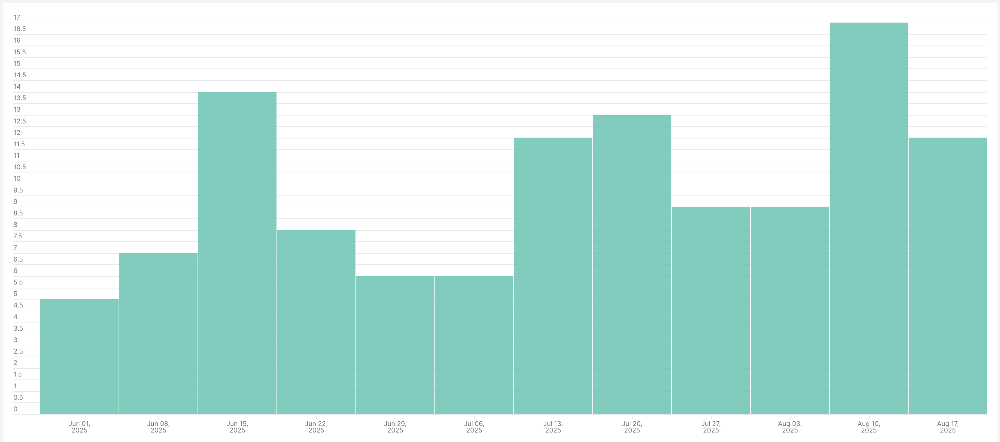
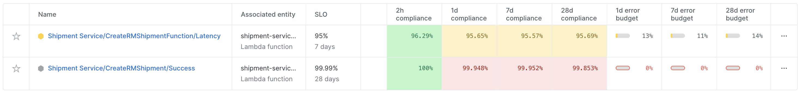
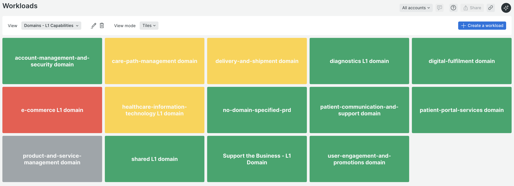
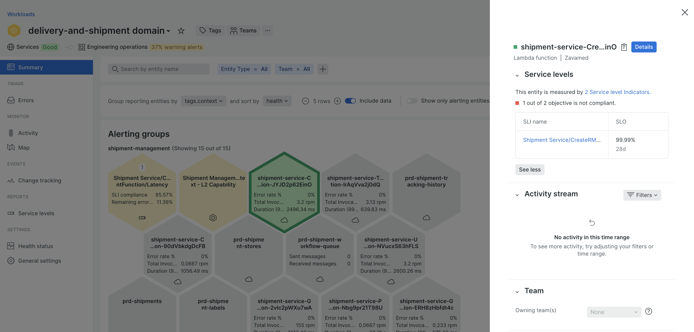
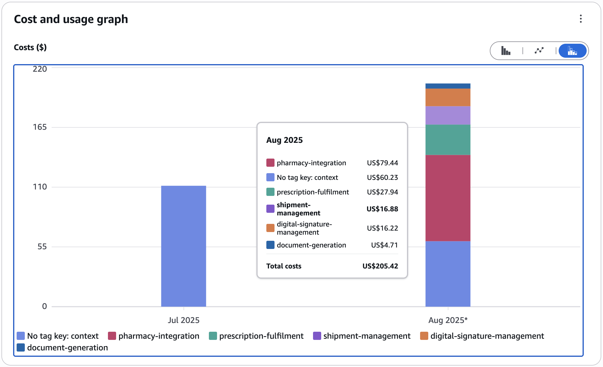

CTO: Are we looking into doing something about the "address too long" errors - they seem to happen multiple times a day now?
Engineer: We have a 99% reliable service. We had 93 errors in the past month and 26,200 successful requests.
Out of the 93 errors, 50 were related to a third party incident.
We can work towards increasing our reliability to 99.99%.
What is Site Reliability Engineering and its core purpose?
Understanding the value and benefits of adopting SRE practices.
The core philosophies and beliefs that drive SRE teams.
Look at how we are implementing it in Shipment service
To create reliable systems at scale while enabling rapid innovation.
Lost revenue, damaged customer trust, and decreased productivity can have a huge impact on the bottom line.
Fosters collaboration between Development and Operations teams to build a shared sense of ownership.
Focuses on preventing incidents before they happen, rather than simply reacting to failures as they occur.
Achieves reliability at scale through key practices like automation, monitoring, and performance engineering.
Enables teams to release new features and updates more quickly and confidently, without compromising quality.
With SRE practices, organisations like Google maintain 99.99% uptime while deploying thousands of changes per day.
Source: Google SRE Book
40 to 90% of the total costs of a system are incurred after birth.
Source: Site Reliability Engineering | How Google runs production systems
Reducing risk becomes exponentially more difficult and costly as it nears 100% reliability.
You can’t improve what you can’t measure.
If your service remains in the same state after you have finished a task, the task was probably toil.
Focus on the four golden signals: Latency, Traffic, Errors, and Saturation.
Free engineers from having to grapple with repetitive tasks that do not add value.
Includes versioning, schedules, continuous builds, gathering of release metrics, and more.
More features equates to more complexity, which can lead to reliability issues.
Maximizing stability limits how fast new features can be developed and how quickly products can be delivered to users, and dramatically increases their cost, which in turn reduces the numbers of features a team can afford to offer.
The cost of redundant machine/compute resources to improve reliability.
The opportunity cost borne by an organization when it allocates engineering resources to build systems or features that diminish risk instead of features that are directly visible to or usable by end users.
Maximizing stability limits how fast new features can be developed and how quickly products can be delivered to users, and dramatically increases their cost, which in turn reduces the numbers of features a team can afford to offer.
The opportunity cost borne by an organization when it allocates engineering resources to build systems or features that diminish risk instead of features that are directly visible to or usable by end users.
An explicit or implicit contract with your users that includes consequences of meeting (or missing) the SLOs they contain.
The expected service level of a system, job, and/or capability. It usually describes the required percentage of success of one or more SLIs within a given period of time.
A carefully defined quantitative measure of some aspect of the level of service that is provided. This may be latency, availability or error rates.
A rate at which the SLOs can be missed and equates to the risk you are comfortable to take for a service.
Manual - Running a script that automates some task
Repetitive - Batman tasks with recipes, or some newrelic alerts which have runbooks
Automatable - If a machine could accomplish the task just as well as a human
No enduring value - If your service remains in the same state after you have finished a task, the task was probably toil
It’s fine in small doses, and if you’re happy with those small doses, toil is not a problem. Toil becomes toxic when experienced in large quantities. If you’re burdened with too much toil, you should be very concerned and complain loudly.
Source: Google SRE Book, Elimnating Toil
Your career progress will slow down or grind to a halt if you spend too little time on projects
Too much toil leads to burnout, boredom, and discontent.
Excessive toil makes a team less productive as they are busy doing manual work and firefighting
If you’re too willing to take on toil, your counterparts will have incentives to load you down with even more toil
If you build too much toil into your team’s procedures, you motivate the team’s best engineers to start looking elsewhere for a more rewarding job
The time it takes to service a request. It’s important to distinguish between the latency of successful requests and the latency of failed requests
A measure of how much demand is being placed on your system, measured in a high-level system-specific metric. For a web service, this measurement is usually HTTP requests per second.
The rate of requests that fail, either explicitly (e.g., HTTP 500s), implicitly (for example, an HTTP 200 success response, but coupled with the wrong content), or by policy
How "full" your service is. Many systems degrade in performance before they achieve 100% utilization
If repetitive, manual tasks, such as user batman updates, are accomplished by automation tools (Robo-Cutter), mistakes and inconsistencies can be nearly eliminated. A new employee might do things differently than an old one; a user might accidentally enter a value in the wrong field. An automated process will not.
If your volume increases exponetially, the workload for the human responsible for handling manual, repetitive tasks, also increases exponetially, pulling this employee away from other, potentially more valuable, aspects of the job. An automated system will not have this issue.
Certain tasks, such as finding and fixing bugs in code, can take a human a great deal of time. Automated software systems have the ability to monitor huge swathes of data, and can often detect errors more quickly than humans through advanced pattern recognition and other tools. Fixes can be applied just as quickly, often without any human involvement.
In order to work at scale, teams must be self-sufficient. Release processes can be automated to the point that they require minimal involvement by the engineers.
Rrequent releases result in fewer changes between versions. This approach makes testing and troubleshooting easier
Build processes should be fully independent of the build machine itself, using the most popular compilers, libraries and tools.
For security reasons, it’s vital that there are checks on certain tasks, including deployment, changes in source code, new releases and changes to build configuration
The price of reliability is the pursuit of the utmost simplicity.
Source: C.A.R. Hoare, Turing Award lecture
A smaller project is easier to understand, easier to test, and frequently has fewer defects. Delete code when it is no longer useful.
Writing clear, minimal APIs is an essential aspect of managing simplicity in a software system.
As a system grows more complex, the separation of responsibility between APIs and between systems becomes increasingly important.
Simple releases are generally better than complicated releases. It is much easier to measure and understand the impact of a single change rather than a batch of changes released simultaneously.
| Critical capability | Description | Sync/Async | Priority |
|---|---|---|---|
| Create shipment | Create shipment with RoyalMail | Synchronous | 1 |
| Cancel shipment | Cancel shipment with RoyalMail | Synchronous | 1 |
| Download TDF | Download TDF from RoyalMail | Asynchronous | 2 |
| Process TDF | Process downloaded TDF file | Asynchronous | 2 |
32.8 K
Successful calls
17
Unsuccessful calls
99.95%
Success Baseline SLI
Source: Newrelic, Create Shipment Lambda statistics for past 1 month

Source: Newrelic, weekly alerts for create shipment lambda function over past 3 months
| Service Level Objective | Monthly Error Budget | Weekly Error Budget |
|---|---|---|
| 99% | 328 Errors | 76.5 Errors |
| 99.9% | 32.8 Errors | 7.65 Errors |
| 99.95% | 16.4 Errors | 3.82 Errors |
| 99.99% | 3.28 Errors | 0.765 Errors |
| 99.999% | 0.328 Errors | 0.076 Errors |
| Percentile | Duration |
|---|---|
| 90th Percentile | 0.68 Seconds |
| 95th Percentile | 0.914 Seconds |
| 99th Percentile | 1.641 Errors |
Source: Newrelic, create shipment lambda function latency over past 1 month
| Duration | Execution Window | Saturation |
|---|---|---|
| 0.68 Seconds | 8am - 4:30pm (30,600 seconds) | 45,000 shipments per day |
| 0.914 Seconds | 8am - 4:30pm (30,600 seconds) | 33,479 shipments per day |
| 1.641 Errors | 8am - 4:30pm (30,600 seconds) | 18,647 shipments per day |
Note: Create shipment lambda uses unreserved concurrency

Source: Newrelic, Service Levels

Source: NewRelic, Domain workloads

Source: NewRelic, Delivery and shipment domain workload

Source: AWS Cost Explorer